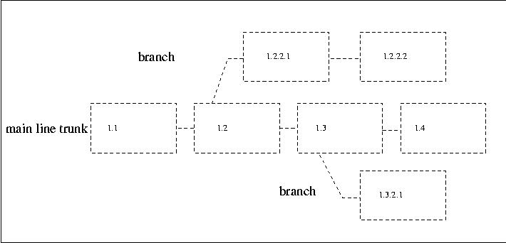
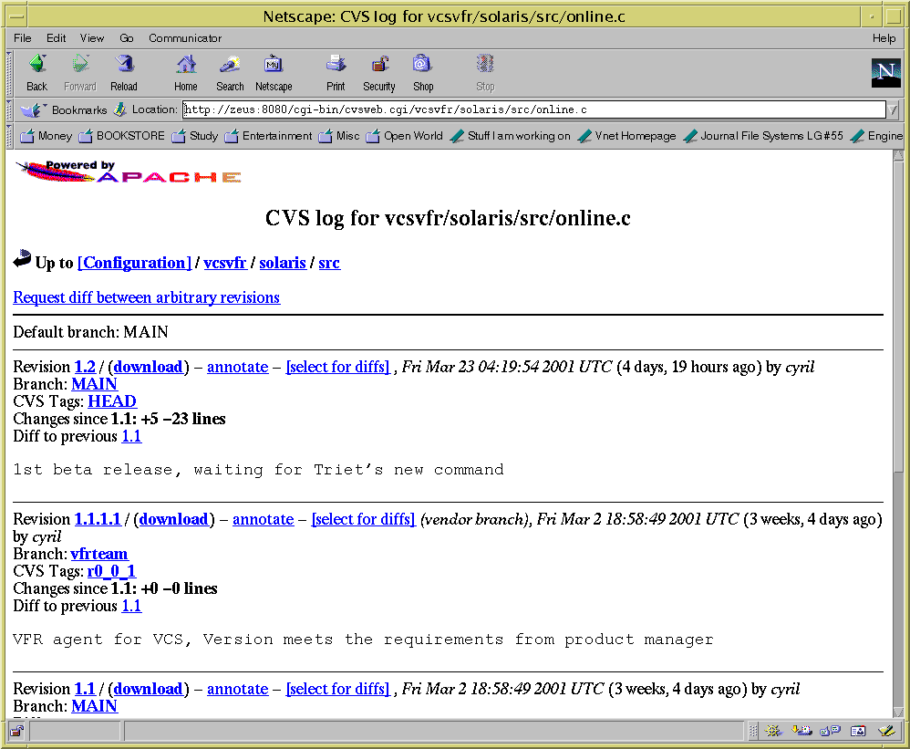
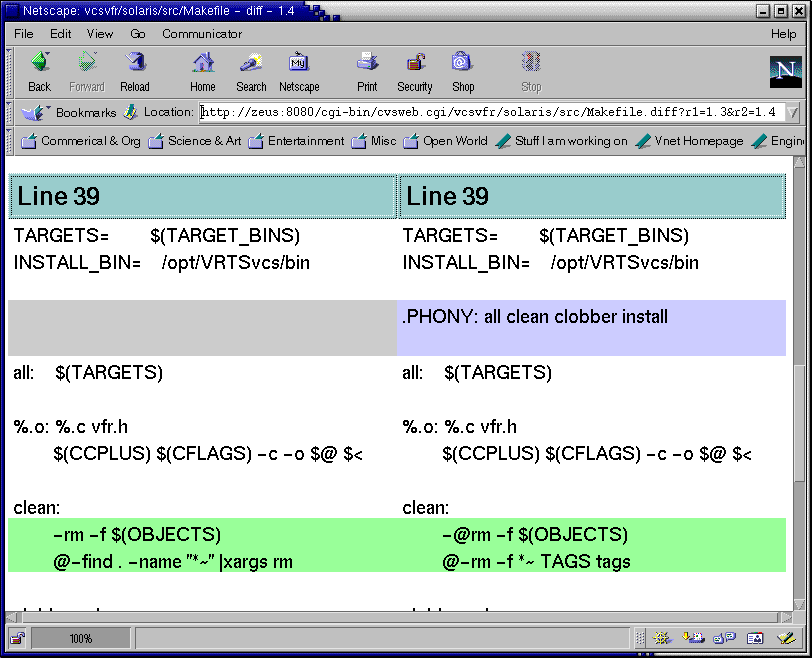

CVS進階功能
自動通知開發團隊
當有人commit了程式後，大家怎麼會知道呢，所以CVS內可以自動在特殊事件後 ，做些特殊的動作。在server那端，$CVSROOT/CVSROOT下面有一些檔案
- commitinfo
這是CVS正式執行commit前的先行檢查程式，定義在這裡面。
- loginfo
當有人寫了log message之後就執行裡面定義的命令。通常是commit後 執行。
- editinfo
這已經不再用了
- verifymsg
檢查commit進來後的log message，可以用個script來檢查。因為 可能一個group裡面對於你的log message有格式的規定，例如一定 要有bug ID，一定要有人名name:的字眼，如果log message不合 團隊的規定，可以把他踢回去。
CVS管制檔案
要修改這些檔案也請先用cvs來存取這些檔案。 其檔案內容格式是
regular-express command |
^study mail -s "information" < info.file |
DEFAULT /usr/bin/cvs-log |
有些字串是相對於版本有所變化的，例如版本號碼，你可以有3種format字串來 代表他們
%s 檔案名 %V 舊的版本號碼 %v 新的版本號碼 |
study mail -s "%{sVv}" nick@debian.comc.com
|
版本編號標籤(tag)與branch Merge
通常我們程式開發時，會有莫名的想法，可能是改進的演算法， 可能是其他的新功能。但是可能不是完全定案，這時我們可以另外 開一支分支來測試我們的新idea程式版本。如圖
Figure 3-2. CVS分支示意圖

對於每次的release，可能我們要給一個tag來做識別，一個tag可以給 某個特定檔案，也可以給整個專案。將來要存取時也可以用tag來做辨認。
$ cvs tag tag_name . 建立一個tag叫tag_name給所有檔案 $ cvs co -r tag_name module_name 從module_name下取出tag_name的所有檔 $ cvs status -v 看目前檔案的status可以看出有什麼tag |
用
$ cvs status -vl [files] $ cvs log -l [files] |
$ cvs tag -b r-1-0-patches $ cvs rtag -b -r r-1-0 r-1-0-patches myproj $ cvs checkout -r r-1-0-patches myproj $ cvs update -r r-1-0-patches myproj |
其中r-1-0-patches是有名字的tag(symbolic tag)。
tag -b 是說相對於目前local工作目錄下的版本給一個分支 rtag -b 是相對於r-1-0這個版本給一個分支r-1-0-patches |
Branch 的Merge
當嘗試完branch覺得不錯想要merge進原有的mainline版本， 先用
cvs update -j branch_tag |
Lock檔案與送交衝突(conflict)
基本上cvs是架在另一個古早的版本控制叫rcs上的，這裡面有一種機制 是可以lock檔案的，也就是只有你可以編輯別人不能編輯，
$ cvs admin -l file.c |
不過這不是好方法，因為當初cvs設計哲學就是要讓大家同時發展程式， 不過有時你改改我改改，程式送交時會發生衝突(conflict)的狀況， 也就是兩個人同時對同一行code修改，而且送交後這有點像race condition。 這時你必須要確定這段相衝的程式是被允許的，修改完後，才能再送交。 當用cvs update時， 如下
#include <stdlib.h>
#include <stdio.h>
int main(int argc,
char **argv)
{
init_scanner();
parse();
if (argc != 1) {
fprintf(stderr, "tc: No args expected.\n");
exit(1);
}
if (nerr == 0)
gencode();
else
fprintf(stderr, "No code generated.\n");
<<<<<<< driver.c
exit(nerr == 0 ? EXIT_SUCCESS : EXIT_FAILURE);
=======
exit(!!nerr);
>>>>>>> 1.6
}
|
$ cvs watch on [files] |
$ cvs edit [files] |
$ cvs watch add |
通知的Administration file是$CVSROOT/CVSROOT/notify notify內的%s是watch user的意思，跟前面loginfo的%s不一樣，所以應該是
study mail %s -s "I am editing" < info.file |
CVS Client GUI介面
CVS有Client的GUI介面，有了以上的觀念，你可以輕易的設定CVS Client GUI了。

MS Windows
在windows下有個WinCVS，請到www.cvsgui.org/download.html 在選單裡面
Admin -> Preference設定CVSROOT 以及"passwd" 這個方法 Admin -> Login 選擇一個目錄 Create -> Import module 這邊會問一些問題，其實就是Unix命令列下的 那些欄位。 Create -> Chekcout module |
Figure 3-4. WinCVS

CVSWeb
把你的CVS倉庫丟到網路上去用Web的方式呈現出來。這在做code review是很有用的，只要買一台infocus之類可以接電腦螢幕的投影機， 或者講好時間大家都在電腦前面， 用X 視窗把netscape或emacs丟到每個人的螢幕前面，就可以code review了。 請在 http://stud.fh-heilbronn.de/~zeller/cgi/cvsweb.cgi/ 捉cvsweb。解開後2個perl檔
把cvsweb.conf拷到apache web server裡面的conf目錄， 改%CVSROOT這個hash，你可以有很多個repository被管理，
將cvssweb.cgi 放到apache的cgi-bin alias目錄下， 改$config讓它指到cvsweb.conf的路徑，
http://xxx.xxx.com/cgi-bin/cvsweb.cgi， 就會執行cvsweb CGI程式了。
秀一下screenshot
Figure 3-5. CVSWeb

Figure 3-6. CVSWeb的diff

sourceforge.net與gnome web site可以看到相當嘆為觀止的展示。 annotated表示有每次版本改變的紀錄在source code 上。cross reference表示可以有超連結。請看
稍微介紹一下CVS有沒有覺得太不可思議了，最不可思議的是這些通通 是不用錢的。我記得以前我在台灣工作時，好像大家還在你copy給我， 我copy給你，想想open source的威力實在太不可思議了，這種程 式的品質，不是兩三天就建立的起來的。想想。想完後，將 帶你進入最不可思議的大驚奇。GNU Compiler Collection。